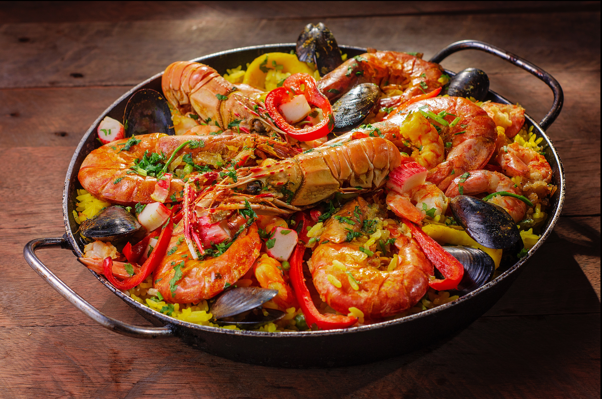
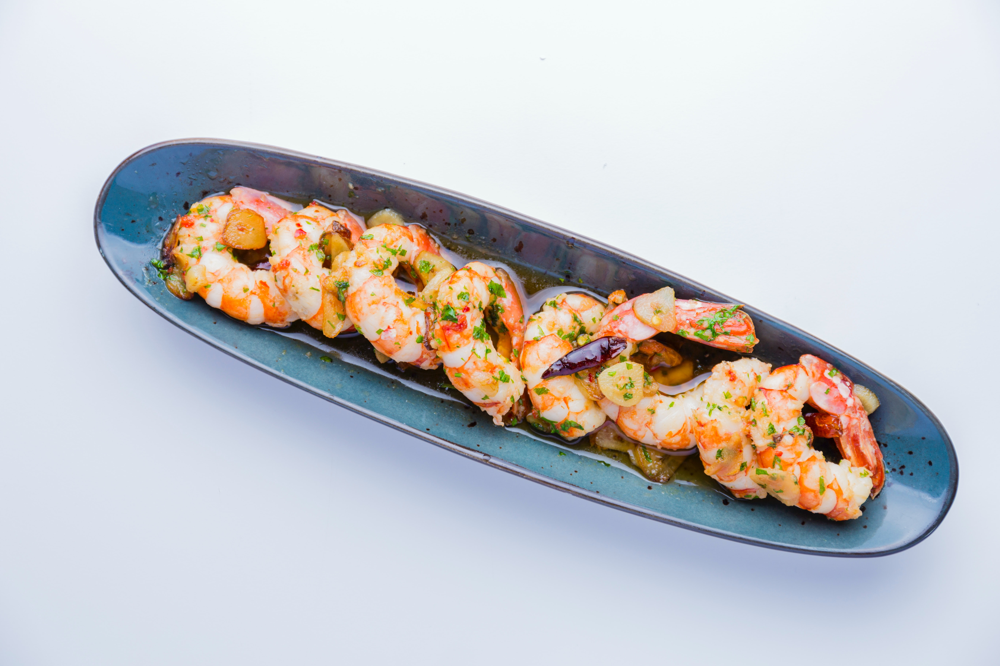
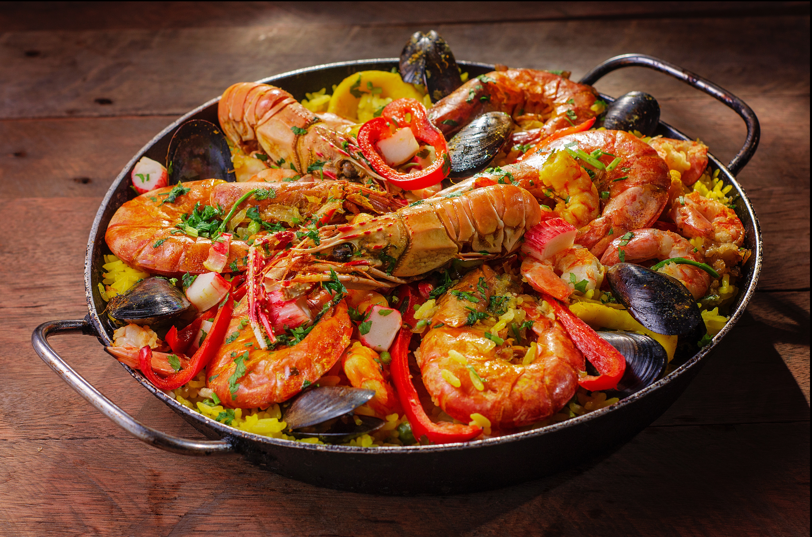
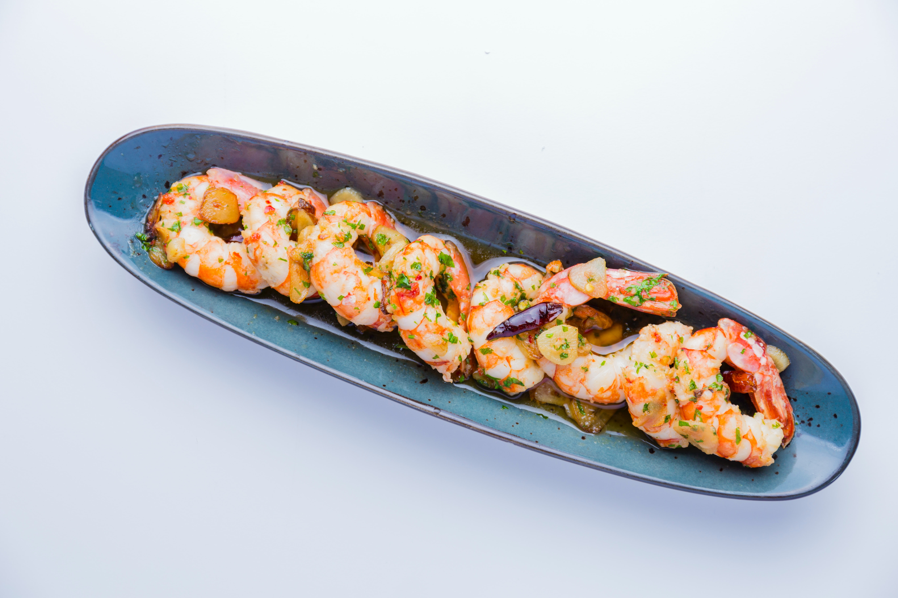

Plato de Aperitivos
Delicias Variadas para Comenzar
Una selección de nuestras mejores tapas para abrir el apetito, incluyendo aceitunas aliñadas, queso manchego, jamón ibérico y albondigas en salsa. Cada bocado es una experiencia única de sabor y tradición.
Paella
Sabor y Color del Mediterráneo
Nuestra paella es una explosión de sabor y color, con arroz jugoso, safrán aromático, y una variedad de mariscos frescos y carnes selectas. Un plato icónico que representa la riqueza gastronómica de España.
Gambas al Ajillo
Del Mar a la Mesa con Aromas del Sur
Gambas frescas salteadas en aceite de oliva con ajo picado y guindilla, un plato sencillo pero lleno de sabor, que captura la esencia de la cocina mediterránea y la frescura de los productos del mar.
Tortilla Española
Tradición y Sencillez en Cada Bocado
La tortilla española es una obra maestra de la simplicidad, con patatas, huevos y cebollas como protagonistas. Dorada por fuera y jugosa por dentro, es un homenaje a la cocina casera y auténtica.
 


